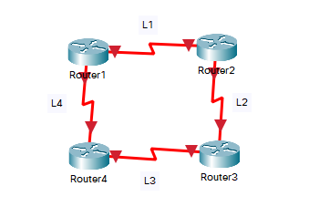
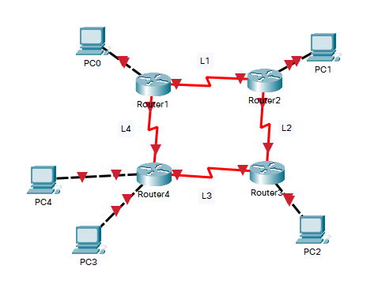

Routing Statico
Questo tipo di routing non comporta alcun cambiamento nella tabella di instradamento, a meno che l'amministratore di rete non le modifichi o le modifichi manualmente. Gli algoritmi di instradamento statico funzionano bene dove il traffico di rete è prevedibile. Questo è semplice da progettare e facile da implementare. Non sono richiesti protocolli di routing complessi.
La costruzione della tabella di routing deve avvenire sia per i percorsi fra i Router adiacenti, che per le Reti non direttamemte connesse.
Per eseguire il Routing fra Router adiacenti, prendiamo come esempio questo schema:
Il Routing deve avvenire in ordine crescente rispetto al numero dei Router, Router1 dovrà quindi spedire il proprio pacchetto verso Router2, e allo stesso tempo ricevere i messaggi da Router4 che è il suo precedente.
Prima di tutto ci servono gli indirizzi delle Reti presenti fra i diversi Router {L1, L2, L3, L4}, per faciltare il processo, prendiamo lo stesso esercizio proveniente dalla sezione VLSM. Ogni Rete prevede Network, Primo indirizzo, Ultimo indirizzo e Broadcast, per questi sono necessari solamente 4 indirizzi (Ovvero 22, equivalente alla Subnet Mask 255.255.255.252 con CIDR /30).
| L1 | L2 | L3 | L4 | |
| Network | 172.31.169.160 | 172.31.169.164 | 172.31.169.168 | 172.31.169.172 |
| Primo Indirizzo | 172.31.169.161 | 172.31.169.165 | 172.31.169.169 | 172.31.169.173 |
| Ultimo Indirizzo | 172.31.169.162 | 172.31.169.166 | 172.31.169.170 | 172.31.169.174 |
| Broadcast | 172.31.169.163 | 172.31.169.167 | 172.31.169.171 | 172.31.169.175 |
Ottenuti gli indirizzi, non rimane altro da fare se non assegnarli, seguendo il ragionamento di prima, quindi assegnare a Router1 il primo indirizzo di L1 e l'ultimo di L4, a Router2 il primo di L2 e l'ultimo di L1 ...
Ora rimane da gestire il Routing fra Reti non direttamente connesse. Il concetto di base, sta nel permettere ad ogni Rete di comunicare con le altre nel minor tempo possibile.
R0 ad esempio dovrà comunicare con tutte le altre Reti ad eccezione di sé stessa. Lo stesso equivale per R3 ed R4, le quali comunicheranno con tutte le Reti ad eccezione di se stesse, facendo parte della stessa Network.
Sempre R0 per comunicare con R1 ed R2, dovrà passare per L1, in particolare all'ultimo indirizzo di essa, 172.31.169.162. Per comunicare con R3 ed R4, prenderà la via più semplice, ovvero L4, con l'indirizzo 172.31.169.173, il primo di questa Rete.